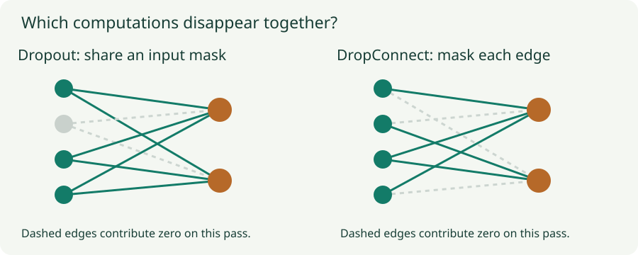

Dropout and DropConnect: Learn with Randomly Missing Paths
Derive inverted dropout’s mean and variance, inspect masks, and understand the train–evaluation distinction.
Dropout changes the computation during training. A feature that is useful on one pass may be missing on the next, so the loss is averaged over random masks. This encourages solutions that work across those missing-feature patterns. The exact mechanism depends on where the mask is applied and which units share it.
1. Why surviving activations are divided by the keep probability
Let $p$ be the probability of dropping an activation and $q=1-p$ the probability of keeping it. Draw $m\sim\operatorname{Bernoulli}(q)$. Inverted dropout returns $\tilde a=ma/q$ during training, and returns $a$ at evaluation. Conditional on the current activation $a$,
The mean stays the same because a value that appears only a fraction $q$ of the time is amplified by $1/q$ when it appears. To obtain the variance, use $\mathbb E[\tilde a^2]=q(a/q)^2=a^2/q$, then subtract the squared mean $a^2$. This is variance over masks for a fixed activation, not variance over examples.
If $a=3$ and $p=0.25$, the output is 0 with probability $0.25$ and 4 with probability $0.75$. Its mean is 3 and its variance is 3. A single forward pass does not preserve the original activation: preservation holds in expectation over masks. Increasing dropout also increases noise; it is not simply turning down the activation magnitude.
2. What loss is training actually minimizing?
The training objective averages $\ell(f(x;m),y)$ over data and masks. Its gradient is estimated using the sampled mask. Parameters on a masked path receive no gradient through that path on that pass, but can receive gradients on later passes with different masks.
A linear squared-loss example makes the implicit penalty concrete. Write $s=\sum_jw_ja_j$ and $\tilde s=\sum_jw_jm_ja_j/q$, with independent masks. The mean of $\tilde s$ is $s$. Expanding its squared error around that mean yields
The cross term disappears because $\mathbb E[\tilde s-s]=0$. Independent masks eliminate cross-covariances in the variance. Thus dropout adds a feature-dependent quadratic penalty in this particular model. Large weights attached to large activations are costly. A nonlinear deep network does not generally reduce to this same simple L2 formula.

3. DropConnect changes which randomness is shared
For a layer $z=Wa$, activation dropout gives $z=W(m\odot a/q)$. A mean-preserving DropConnect variant gives $z=(M\odot W/q)a$, with a separately sampled mask entry for each connection. Both can have the same mean preactivation, but their joint distributions differ.
For two outputs $r$ and $s$, activation dropout creates conditional covariance
Both outputs move together when a shared input is removed. With independent DropConnect masks across rows, this mask-induced covariance is zero. This does not say the outputs are independent across data: the statement holds conditional on fixed inputs and weights. The original DropConnect work also discusses inference approximations; the lab uses the explicitly stated inverted-scaling variant.
4. Lab: sample the masks and measure their effect
Shared activation masks versus independent edge masks
Inputs are $(1,2,-1,1)$. The two weight rows are $(1,0.5,-0.5,1)$ and $(0.5,1,0.5,-1)$. Their unmasked outputs are $3.5$ and $1$. The chart recomputes running means from 1,000 seeded mask draws; the readouts also compare theoretical and sampled covariance.
Switch the mask type while keeping the drop probability fixed. Each mean still approaches its unmasked value, but the output covariance changes. A finite sample need not match the theoretical value exactly. The model and weights are fixed; this experiment measures mask noise, not generalization after training.
5. Evaluation is a separate mode
Inverted dropout becomes the identity at evaluation. Do not divide by $q$ again, and do not keep randomly dropping units unless you deliberately want stochastic predictions. Older conventions used unscaled training activations and multiplied by $q$ at evaluation; mixing conventions gives the wrong scale.
def inverted_dropout(a, drop_probability, training):
if not training or drop_probability == 0:
return a
keep = 1 - drop_probability # require 0 < keep <= 1
mask = (torch.rand_like(a) < keep).to(a.dtype)
return a * mask / keepMean preservation at one location does not imply $\mathbb E[f(x;m)]=f(x;\mathbb E[m])$ through nonlinear layers. The deterministic evaluation network is therefore not an exact average of every masked network. Monte Carlo dropout instead averages several stochastic predictions. Its uncertainty estimates depend on modeling assumptions and calibration; sampling masks alone does not guarantee reliable uncertainty under distribution shift.
6. Placement matters as much as the probability
Specify whether dropout acts on inputs, hidden activations, attention probabilities, or a residual branch. Mask shapes determine whether examples, channels, or timesteps share randomness. Do not use a default probability without examining the architecture and validation curve.
Dropout can interact with normalization because training-time activation statistics differ from evaluation-time statistics. In a network already strongly regularized by augmentation, decay, or limited capacity, additional dropout can worsen underfitting. Monitor both training and validation performance and verify that the model is in the correct mode before evaluating it.
Questions with answers
No. Each unit survives with that probability under independent Bernoulli masks. The realized fraction fluctuates.
The scaling preserves their expectation. Regularization comes from training with random missing paths, not from making every activation smaller.
No. They can agree on marginal means while producing different shared noise across outputs because their mask correlations differ.
Sources
Srivastava et al., Dropout; Wan et al., DropConnect. Calculations and simulations here use fixed inputs and explicitly specified Bernoulli masks.